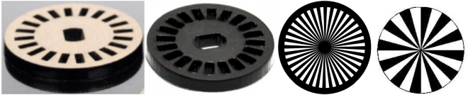
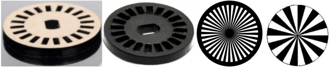
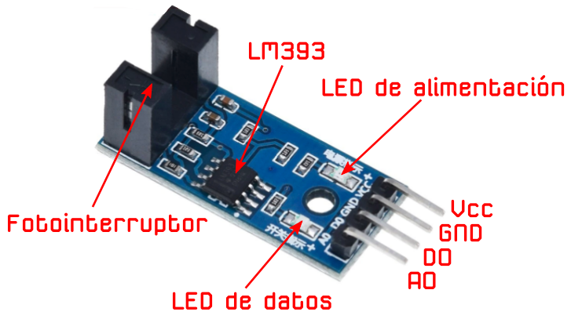
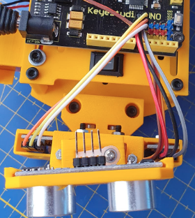
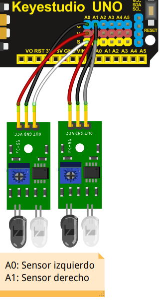

Movimientos
Puede moverse en todas direcciones gracias a sus dos motores de corriente continua, desplazamientos y giros. Los motores pueden girar a diferentes velocidades (control PWM).

Puede moverse en todas direcciones gracias a sus dos motores de corriente continua, desplazamientos y giros. Los motores pueden girar a diferentes velocidades (control PWM).
Gracias a los dos encoders que tiene podemos detectar distancias y ángulos recorridos por el mismo. Por tanto podemos hacer desplazamientos y giros con mayor precisión.
 


Tiene un sensor ultrasónico fijo o giratorio.

Tiene dos sensores de infrarrojos regulables en su parte delantera, para detección de líneas negras o blancas, así como caidas.

Posee dos servomotores para poder mover ultrasonidos en la cabeza y brazo para coger objetos y apartarlos psoteriormente.

Tiene un zumbador piezoeléctrico capaz de emitir sonidos y notas musicales.
Obra publicada con Licencia Creative Commons Reconocimiento Compartir igual 4.0